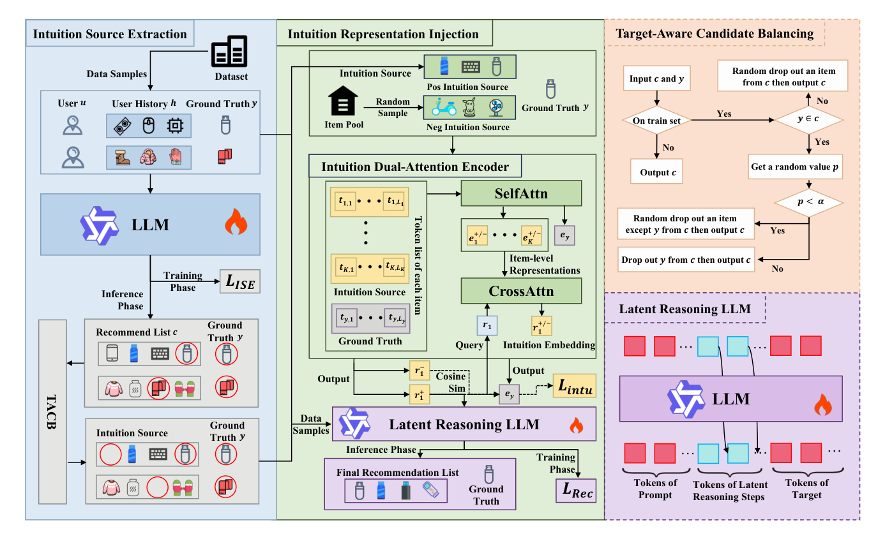

Intuition-Guided Latent Reasoning for LLM-Based Recommendation (直觉引导的 LLM 推荐隐空间推理)
- 会议/期刊: KDD 2026 (Jeju Island)
- 作者与机构: Chang Liu, Yimeng Bai, Xiaoyan Zhao, Yang Zhang, Qifan Wang, Fuli Feng, Wenge Rong（北航、中科大、CUHK、NUS、Meta AI）
- 推荐链路定位: 端到端生成式（Next-Item 生成 + 隐空间推理）
- 研究方向: 大语言模型推荐 (LLM4Rec) / 序列推荐
- 论文原文: https://arxiv.org/abs/2606.27684v1
- 开源代码: https://github.com/Ten-Mao/IntuRec
TL;DR (1分钟核心速览)
现有 LLM 隐空间推理（latent reasoning）只在最终推荐输出端做监督，推理起点 \(\boldsymbol{r}_1\)完全无约束、与目标物品嵌入语义错位，多步推理极易漂入“次优推理盆地”。本文借鉴认知神经科学“直觉先验”，提出两阶段框架 IntuRec：先用 LLM 序列推荐模型 beam search 出 top-\(K\) 候选集，再由双注意力编码器压成单个偏好对齐的“直觉嵌入”替换推理起点。在 Amazon CDs/Toys/Games 三数据集、beam=10 + 约束解码的生成式排序协议下，IntuRec-D 的 Recall@5/NDCG@10 全面超越 LatentR3-D 与 D3，Recall@5 相对提升 4.8%–9.0%。
Background & Motivation (背景与核心矛盾)
- 主流范式: 以 BIGRec/D3 为代表的 LLM 推荐直接自回归生成物品；LatentR3/ReaRec 在离散 token 之外插入 \(N\)步连续隐状态\(\boldsymbol{r}_n\) 做“先思考再推荐”，以更低步数替代 CoT。
- 前人局限: ① 隐状态只受末端推荐损失约束，起点随机初始化，与物品嵌入空间不共享度量；② 一旦起点偏离，后续 \(N-1\) 步只能在该子空间内自我强化，形成不可逆的轨迹偏移。
- 核心洞察 (Key Insight): 人类多步推理并非从零 deliberative 展开，而是先有粗粒度直觉把解空间裁剪到有希望的流形上。作者据此将“推荐直觉”定义为 top-\(K\) 候选集所张成的偏好子空间。
- 本文切入点: 用一段“离线候选集 + 轻量编码器”为隐推理提供一个语义落地 (semantically grounded) 的起点 \(\boldsymbol{r}_1^{+}\)。

Method (核心方法设计)
1. 整体框架 (Overall Architecture)
IntuRec 分两阶段串行。ISE 阶段：用标准 next-token 预测在用户历史 \(x\)上微调 Qwen2.5-1.5B，收敛后对每条样本 beam search 出 top-\((K{+}1)\)候选，经 TACB 平衡得到正候选集\(c^{+}\)与随机负候选集\(c^{-}\)，离线落盘。IRI 阶段：IDAE 把\(c^{+}\)编码为\(\boldsymbol{r}_1^{+}\) 并注入 LLM 隐推理链，LLM 与 IDAE 端到端联合优化，解码仍用 beam search + 约束解码。整个闭环的关键是把“候选集合”这一集合型证据压成单个向量，从而不引入额外推理步数。
flowchart TD
A["用户历史 x + 目标 y"] --> B["ISE: LLM 序列推荐微调"]
B --> C["Beam Search top-(K+1) + TACB 平衡"]
C --> D["c+ 正候选 / c- 随机负候选"]
D --> E["IDAE: 物品内 SelfAttn 池化 → 以 r1 为 Query 的 CrossAttn"]
A --> F["初始隐状态 r1"]
F --> E
E --> G["r1+ 注入 Latent Reasoning LLM"]
G --> H["生成推荐列表"]2. 关键设计拆解 (Key Designs)
- Target-Aware Candidate Balancing (TACB)：直接拿 top-\(K\)候选做直觉源会触发 shortcut learning——若目标\(y\)恰好落在候选集中且比例过高，模型只学“抄候选”，比例过低又削弱监督。TACB 先取 top-\((K{+}1)\)，再按概率\(\alpha\)决定保留还是剔除\(y\)，并按验证集分布标定：
\(\alpha = \frac{\beta_{\text{valid}}}{\beta_{\text{train}}}\)其中\(\beta\) 为候选集中含真值的目标比例。该式使训练期的“候选命中率”期望上等于验证/测试期，避免人为分布漂移。
- Intuition Dual-Attention Encoder (IDAE)：候选集是变长物品列表，直接拼进 prompt 与历史同质、引导太间接（消融中掉点最狠）。IDAE 先做物品内 self-attention 再取末位池化得 \(\boldsymbol{e}_k^{+}\)，再以初始隐状态\(\boldsymbol{r}_1\) 为 Query 做 cross-attention：
\(\boldsymbol{e}_k^{+}=\mathrm{SelfAttn}(\{\boldsymbol{t}_{k,l}\}_{l=1}^{L_k})[-1],\quad \boldsymbol{r}_1^{+}=\mathrm{CrossAttn}(Q{=}\boldsymbol{r}_1,\,K{=}V{=}\{\boldsymbol{e}_k^{+}\}_{k=1}^{K})\)直觉解释：self-attn 抓物品内部 token 结构，cross-attn 让直觉“条件于”用户上下文，从而与\(\boldsymbol{r}_1\) 处在同一坐标系内，而非另起炉灶。
- 训练目标、负采样与推理效率：总损失为
\(\mathcal{L}_{\text{IRI}}=\mathcal{L}_{\text{rec}}+\lambda\mathcal{L}_{\text{intu}},\quad \mathcal{L}_{\text{intu}}=-\log\sigma\big(\mathrm{sim}(\boldsymbol{r}_1^{+},\boldsymbol{e}_y)-\mathrm{sim}(\boldsymbol{r}_1^{-},\boldsymbol{e}_y)\big)\)负例\(\boldsymbol{r}_1^{-}\)由随机采样物品经同一 IDAE 编码得到（in-batch 式 BPR，无需 hard negative）。\(\mathcal{L}_{\text{intu}}\) 的作用是防止只用高质量候选训练导致“结构合理但语义偏置”的嵌入。推理期仅第 1 步做一次直觉聚合，后续步骤与 LatentR3 相同，实测推理延迟反而低于 LatentR3（后者每步都要过 LatentRTT），但训练延迟更高（需回传末层隐状态）。
Experimental Setup & Evaluation Protocol (实验设置与评估协议)
- 数据集与预处理:
| 数据集 | #Users | #Items | #Train/#Valid/#Test | 稀疏度 | 特征/场景说明 |
|---|---|---|---|---|---|
| CDs | 7,685 | 5,841 | 49,251 / 6,156 / 6,158 | 99.86% | Amazon 音乐 CD，标题文本 |
| Toys | 11,311 | 6,299 | 53,898 / 6,737 / 6,738 | 99.91% | Amazon 玩具，标题文本 |
| Games | 13,577 | 5,308 | 75,175 / 9,397 / 9,397 | 99.87% | Amazon 电子游戏，标题文本 |
- 数据划分与防穿越: 先做
5-core过滤；再按 LatentR3 的动态时间窗切分（终点固定 2018-10，起点从 2017-10 回退直至物品数 > 5,000），按8:1:1划分训练/验证/测试；序列截断或补齐至长度 10，保留最近交互。 - 排名评测协议: 非 Full-Ranking。所有 LLM 类方法用 beam size = 10 生成候选并截断至 \(K\)，配合约束解码抑制幻觉；指标为 Recall@5/10 与 NDCG@5/10。需注意该协议下指标会被 beam 宽度与约束解码策略共同影响，跨论文比较需谨慎。
- 对比基线与超参: 传统方法 Caser/GRU4Rec/SASRec/ReaRec；LLM 方法 LLM-Base/LLM-CoT/AlphaRec/BIGRec/D3/LatentR3-B/LatentR3-D。骨干 Qwen2.5-1.5B，AdamW，学习率 \(\{3e\text{-}3,3e\text{-}4,3e\text{-}5\}\)，早停 patience=1；\(K\in\{5,\dots,30\}\)，\(N\in\{1,\dots,5\}\)，\(\lambda\in\{0.5,1.0\}\)。原文未报告显著性检验。
Key Experimental Results (实验关键数据)
1. 主实验对比 (Main Results)
| 数据集 | 指标 | SASRec | ReaRec | BIGRec | D3 | LatentR3-B | LatentR3-D | IntuRec-D | Improv. |
|---|---|---|---|---|---|---|---|---|---|
| CDs | R@5 | 0.0841 | 0.0845 | 0.0757 | 0.1122 | 0.0918 | 0.1077 | 0.1174 | +9.0% |
| CDs | N@10 | 0.0691 | 0.0737 | 0.0672 | 0.0955 | 0.0828 | 0.0960 | 0.0995 | +3.6% |
| Toys | R@5 | 0.0601 | 0.0565 | 0.0701 | 0.0830 | 0.0773 | 0.0880 | 0.0922 | +4.8% |
| Toys | N@10 | 0.0510 | 0.0472 | 0.0582 | 0.0674 | 0.0665 | 0.0740 | 0.0773 | +4.5% |
| Games | R@5 | 0.0416 | 0.0576 | 0.0461 | 0.0608 | 0.0590 | 0.0713 | 0.0751 | +5.3% |
| Games | N@10 | 0.0350 | 0.0487 | 0.0414 | 0.0505 | 0.0513 | 0.0580 | 0.0625 | +7.8% |
（Improv. 为相对最强基线 LatentR3-D 的涨幅；IntuRec-B 亦全面优于 LatentR3-B，如 CDs R@5 0.0986 vs 0.0918。）
2. 消融实验 (Ablation Study)
CDs 数据集，基座为 IntuRec-B：
| 变体 | R@5 | R@10 | N@5 | N@10 |
|---|---|---|---|---|
| IntuRec-B (full) | 0.0986 | 0.1221 | 0.0795 | 0.0871 |
| w/o TACB | 0.0949 | 0.1187 | 0.0777 | 0.0854 |
| w/ random intu | 0.0953 | 0.1156 | 0.0771 | 0.0835 |
| w/ low-pop intu | 0.0937 | 0.1143 | 0.0776 | 0.0841 |
| w/o IRI | 0.0822 | 0.1015 | 0.0669 | 0.0731 |
| w/ text injection | 0.0762 | 0.0962 | 0.0601 | 0.0667 |
| w/o SelfAttn | 0.0963 | 0.1189 | 0.0776 | 0.0849 |
| w/o CrossAttn | 0.0892 | 0.1098 | 0.0718 | 0.0784 |
| w/o \(\mathcal{L}_{\text{intu}}\) | 0.0957 | 0.1194 | 0.0787 | 0.0863 |
3. 关键实验发现 (Key Findings)
- 注入形式比注入内容更关键：把候选集作为纯文本拼进 prompt（w/ text injection）R@5 仅 0.0762，甚至低于完全不做 IRI 的 0.0822，说明与历史同质的文本证据反而干扰推理；而单嵌入注入达 0.0986，验证了“集合→单向量”的压缩才是增益来源。
- 直觉语义质量决定收益量级：换成随机候选（0.0953）或最低流行度 5% 候选（0.0937）仍好于 w/o IRI，但均显著低于真候选，说明模型利用的是候选的方向性而非仅“额外 token 带来的计算深度”；TACB 去除后掉 3.8%，证明候选命中率分布对齐有实质作用。
- 起点即答案：\(N\)的最优值为 1，随\(N\) 增大 Recall@5 单调微降（图 4 右）；配合图 3 中 IntuRec 起点 A 显著贴近目标 B 而 LatentR3 起点 C 偏移的可视化，说明一旦起点被锚定在偏好流形上，额外推理步数只带来一致性维护成本而非探索收益。
Highlights & Limitations (亮点、对比与审稿批判)
- 与代表作对比 (vs. Prior Work): 与 LatentR3 的差异不在“多加推理模块”，而在改推理起点——LatentR3 每步都过 LatentRTT 且需 GRPO 调优，IntuRec 只在第 1 步做一次 cross-attn 聚合，训练更简单、推理更省；与 ReaRec 在 ID-based SASRec 上的隐推理相比，本文把同一思想搬进 LLM 语义空间并引入 item 级先验；与 D3 相比，本文不靠去偏解码技巧，而是从轨迹源头纠偏。
- 可迁移亮点: ①“集合 → 单嵌入 + 起点替换”这一范式可无痛迁移到 RQ-VAE 生成式推荐的语义 ID 初始化、多模态候选融合；② TACB 的 \(\alpha=\beta_{\text{valid}}/\beta_{\text{train}}\) 标定思路，可泛化到任何“teacher 候选可能泄题”的知识蒸馏/重排场景。
- 审稿级局限批判: ① 评测为 beam=10 的生成式截断排序，非 Full-Ranking，且未做显著性检验，候选集泄漏与 beam 宽度耦合会影响结论稳健性；② ISE 阶段的 top-\(K\) 候选需离线预生成并落盘，随用户序列更新需重跑 beam search，工程上引入额外存储与刷新成本，论文未给出大规模数据下的生成/存储开销与延迟数据。
Rating (四维评分)
- 方法创新性 (Novelty): ⭐⭐⭐⭐ （把认知科学的“直觉先验”落成可算子化的起点替换，机制简洁且有嵌入空间可视化支撑，但组件本身均为已有注意力/BPR 的重组）
- 评估协议与实验扎实度 (Protocol & Experiments): ⭐⭐⭐ （三数据集 + 8 类基线 + 9 组消融较完整，但生成式 beam 排序非全库排序、无显著性检验、无大规模或线上验证）
- 写作与数学规范度 (Clarity & Rigor): ⭐⭐⭐⭐ （两阶段流程与公式编号清晰、算法 1 完整；跨注意力中 \(K,V\)与超参\(K\) 符号复用易混淆）
- 工业落地与复现价值 (Industrial & Practical Value): ⭐⭐⭐⭐ （代码已开源，推理期仅首步聚合、延迟低于 LatentR3，适合延迟敏感场景；代价是训练需回传末层隐状态与离线候选缓存）